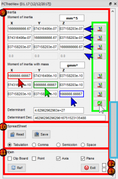

|
| Descrizione |
|---|
| Fornisce una serie di informazioni sulla forma. |
| Autore |
| Mario52 |
| Link |
| Esempi di macro Come installare le Macro Personalizzare la barra degli strumenti |
| Versione |
| 1.20 |
| Data ultima modifica |
| 29/01/2018 |
Fornisce una ampia serie di informazioni sulla forma selezionata quali lunghezza, angoli, superficie, inclinazione, volume e peso secondo la densità della forma selezionata, sia nelle unità del Sistema Internazionale che in quelle del Sistema Anglosassone.
{kind=link}
Utilizzo
Selezionare un oggetto e avviare l'applicazione o viceversa. Viene visualizzata la tabella delle informazioni. I calcoli sono basati sull'unità di FreeCAD, che è il mm. Ogni nuova selezione ripristina il mm per l'unità di lunghezza e i gradi sessadecimali (°) per gli angoli.
{kind=link}
{kind=link}
Settore 1: Documento
- Nome del documento
- Etichetta dell'oggetto
- Nome interno dell'oggetto
- Nome dei sottoelementi dell'oggetto
- Tipo di oggetto
Settore 2: Coordinate del clic mouse
- Coordinate X,Y e Z del punto cliccato con il mouse
- Il bottone crea un punto, asso, piano, copia dei vettori su la forma FreeCAD.Vector(-24.0, 240.0, 7.0)
Settore 3: Value
- Lunghezza dell'oggetto, se l'oggetto è una faccia viene visualizzato il perimetro. Si può scegliere l'unità di misura :
km, hm, dam, m, dm, cm, mm, µm, nm, pm, fm, inch, link, foot, yard, perch, chain, furlong, mile, league, nautique. - Perimetro della forma (lunghezza di tutti i bordi).
Settore 4: Vertexes and details
- CheckBox per attivare la funzione spreadSheet ché prende molto tempo a ogni clic mouse con uno obietto complicato perché la ricerca dei completi dati si fa a ogni clic mouse.
- Vertici e dettagli della forma (compt_Edge), (compt_Faces), (compt_Vector of the Face)
la tabella contiene al massimo 200 righe, se ci sono più di 200 righe appare (!+ 200) e il numero di righe
(tutti i dettagli possono essere salvati con il pulsante Save in un file in formato CSV e possono essere visualizzati nel foglio di calcolo con Read o da un foglio esterno come LibreOffice OpenOffice o altri)
Settore 5: Inclination
- Inclinazione dell'oggetto che può essere visualizzata in:
- gradi decimali, ex: 174.831872611°
- gradi minuti secondi, ex: 174° 49' 54.741401''
- radianti, ex: 3.05139181449 rad
- gradi gon, ex: 194.257636235 gon
- percentuale ex: 30° = 57.74% *Inclinazione nei piani XY, YZ, ZX e loro coordinate
- Inclinazione su i piani XY, YZ, ZX é le loro coordinate
- Direction object, calcola la direzione del obietto, il calcolo si fa : coord_1 - coord_2 = direzione (o reverse)
- Line, questo pulsante crea una linea con la direzione del obietto.
- ValueAt, ritorna il 3D vector corrispondente ai parametri Value.
Settore 6: Surface and Volume
- Superficie della forma visualizzata. Si può scegliere l'unità di misura
- Superficie della faccia visualizzata. Si può scegliere l'unità di misura
- Volume della forma con l'unita scelta
- density of the material in kg by dm3
(lo "spinBox" e regolato a 1,0 kg. Se volette cambiare il valore modificate il valore della linea 230) - Il bottone gram e l'unita di massa a schegliere :
ton,quintal, kg, hg, dag, gram, dg, cg, mg, µg, ng, pg, fg, gr (grain), dr (drachm), oz (once), oz t (once troy),
lb t (livre troy), lb (livre av), st (stone), qtr (quarter), cwt (hundredweight), tonneau fr, ct - weight of the form il peso del obietto con la densità e unita scelti.
Settore 7: BoundBox
- BoundBox, dimensioni estreme della forma
Settore 8: Center of:
- Centro della forma e le sue coordinate XYZ
- Centro di massa e sue coordinate XYZ
- Il bottone crea un punto, asso, piano, copia dei vettori su la forma FreeCAD.Vector(-24.0, 240.0, 7.0)
Settore 9: Inertia
- Momento di inerzia e le sue coordinate, calcolo su lunghezza et peso
- Il bottone crea un punto, asso, piano, copia dei vettori su la forma FreeCAD.Vector(-24.0, 240.0, 7.0)
- action line 1 : x1, y1, z1
- action line 2 : x2, y2, z2
- action line 3 : x3, y3, z3
- action 4 diagonal : x1, y2, z3
stesso per lunghezza e peso
- Determinant 1 : calcola il determinanti della matrizza scientific value
- Determinant 2 : calcola il determinanti della matrizza decimala value
Section 10: SpreadSheet
- Read : Apre un file .FCInfo
- Save : Salva un file .FCInfo
- Tabulation : il separatore e una Tabulation
- Comma : il separatore e una Virgola
- Semicolon : il separatore e un Punto virgola
- Space : il separatore e uno Spaccio
L'opzione per salvare e leggere lo spreadsheet con differenti separatori, Tabulazioni, Virgola, Punto virgola, Spazzio
La Tabulazione e il separatore dello spreadsheet di FreeCAD
Il numero di separatori e calcolato per dare una potenziale informazione di chi sarebbe il separatore dentro il filo aperto.
La virgola e il separatore delle versione anteriore de FCInfo (01.16 e inferiore)
Adesso (versione 01.17 e più) il separatore per difetto e la tabulazione
Se volete convertire le vecchie fili di FCInfo, caricate il file con il separatore del file e salvatelo con la casella Tabulazione selezionata.
Section 11: Main
- CheckBox Clip Board : se questa casella e validata le coordinate sono salvate in memoria di forma : FreeCAD.Vector(-24.0, 240.0, 7.0)
- CheckBox Point : se questa casella e validata uno punto e creato alle coordinate visualizzate.
- CheckBox Axis : se questa casella e validata uno asso XYZ e creato alle coordinate visualizzate.
- CheckBox Plane : se questa casella e validata uno piano XYZ e creato alle coordinate visualizzate.
- Ref : Raffresca la vista rapporto.
- Exit : Esce della macro. La macro resta in memoria.
- CheckBox 1 : se questa casella e validata le informazione sono visualizzati dentro la vita report.
- CheckBox 2 : se questa casella e validata la finestra si mette a la sinistra della vista 3D. (Difetto non validata la finestra e a destra)
Una volta lanciata, la macro rimane attiva e la finestra rimane visibile. Per chiudere la macro si deve usare il pulsante Exit. Se si esce tramite il pulsante con la croce, la macro rimane in memoria ed i dati vengono visualizzati nel report di FreeCAD.
La tabella dei dati può essere dislocata a destra,
o a sinistra con Vista combinata , o non dislocata, a piacere.
{kind=link}
{kind=link}
Opzioni
Unità di misura utilizzate
Lunghezza :
km, hm, dam, m, dm, cm, mm, µm, nm, pm, fm, inch, link, foot, yard, perch, chain, furlong, mile, league, nautique.
Angoli:
- gradi sessadecimali, esempio: 174.831872611°
- sessagesimali gradi primi secondi, es: 174° 49' 54.741401''
- radianti, es: 3.05139181449 rad
- centesimali, es: 194.257636235 gon
- pendenza %, es: 30° = 57.74%
Visualizzazione degli angoli in FCInfo.
Visualizzazione degli angoli in FCInfo.
Visualizzazione della pendenza in FCInfo.
Clicca due volte sopra l'immagine per vedere l'animazione (l'immagine deve essere in pieno schermo per vedere l'animazione)
{kind=link}
{kind=link}
Peso:
tonne, quintal, kg, hg, dag, grammo, dg, cg, mg, µg, ng, pg, fg, gr (grain), dr (drachm), oz (once), oz t (once troy), lb t (livre troy), lb (livre av), st (stone), qtr (quarter), cwt (hundredweight), tonneau fr, ct
Il valore della massa volumica è preimpostato su 7,5 kg/dm3, che è la densità media dell'acciaio. Per impostare un valore predefinito diverso, modificare il valore della densità nella riga 206:
global densite ; densite = 7.5 # (steel = 7.5 kg par dm3)
Tramite il pulsante Save è possibile archiviare i dati ottenuti in un file di tipo csv e utilizzarli in una tabella dentro FreeCAD o OpenOffice, LibreOffice ...
Script
Copiare il contenuto della macro in un file chiamato "FCInfo.FCMacro"
- Windows: di solito "C:\Utenti\nome_utente\AppData\Roaming\FreeCAD\ "
- Ubuntu: di solito "/home/nome_utente/.FreeCAD".
Oppure, direttamente nell'interfaccia di FreeCAD
L'icona deve essere nella stessa directory della macro.
Scaricare l'immagine posizionando il puntatore sull'icona e poi fare clic destro e selezionare "Salva come" (senza cambiare il nome).
Dato che, per il momento, le pagine wiki accettano solo 64 KB e il file della macro è più grande, il suo codice è stato inserito nel forum.
{kind=link}
{kind=link}
There is also FCInfo_Alternate_Linux for only for FreeCAD version 0.13... and PyQt4
There is also a Macro_FCInfo_Alternate_Linux here the code is changed (due to the character display error : ² ³ ° μ ordinal not in range (128)") which posed problems in certain configurations the functions are the same
Example :
global uniteSs ; uniteSs = u"mm²" global uniteVs ; uniteVs = u"mm³" global uniteAs ; uniteAs = u"°"
remplacés par
global uniteSs ; uniteSs = "mm"+iso8859(unichr(178)) global uniteVs ; uniteVs = "mm"+iso8859(unichr(179)) global uniteAs ; uniteAs = iso8859(unichr(176))
Files saved with this version is incompatible with the other version (docked or not)
Carisa il file contenente le icon della macro Macro_FCInfo_Icon unzip e copia li fili dentro lo steso repertorio che la macro.
Scaricare il file docked to right FCInfo_en_Ver_latest_Docked.FCMacro. PySide
Oppure scaricare Dal forum.
PS: Questa macro utilizza il comando getSelection() e la lista degli oggetti comincia da 1 ex: per uno cubo Edge1 to Edge12 e il codice dentro la console Python comincia da 0 ex: per uno cubo Edge[0] fino Edge[11]
Questo è normale il contatore della lista dentro OpenCascade comincia sempre da 1 e non da 0
Limitazioni
Uscire sempre dalla macro tramite il pulsante Exit, altrimenti il programma rimane in memoria e continua a funzionare fino a quando non si chiude FreeCAD.
La tabella riporta solo i primi 200 elementi dell'oggetto, quando l'oggetto contiene più di 200 elementi viene visualizzato l'avviso (! +200). In questo caso, l'elenco completo dei dati è visibile nel file csv che può essere creato e salvato cliccando sul pulsante Save.
Se dopo avere lanciato la macro la macro non e visibile, guardate a la base della finestra.
{kind=link}
{kind=link}
In progetto :
leggere i dati direttamente in una tabella. fatto
mappare dgli spigoli ("Edges") e le loro coordinate fatto
associare una sostanza alla sua massa volumica
angoli di inclinazione riferiti all'elemento piuttosto che all'oggetto globale fatto
alloggiamento a destra nell'interfaccia di FreeCAD fatto
attualmente : ver 1.20 , 29/01/2018 optimization
ver 1.19 , 20/01/2018 create checkBox for use detection all elements of the object if wanted or not , the macro is faster. Optimisation
ver 1.18 , 19/12/2017 ...
ver 1.17c , 14/12/2017 create plane with coordinate give in one project in other project and replace "FCInfo" by "__title__"
ver 1.17b , 13/12/2017 little correction replace FCTreeView to FCInfo
ver 1.17 , 12/12/2017 add upgrade Moment of inertia mm and kg by pinq FCMacro and moment of inertia of assembly, and create plane, axis, point, and add options separator for spreadsheet
ver 1.16 , 21/06/2017 aggiunto controllo della altezza della pollice (qui PointSize 8), casella di posizione della finestra della macro sinistra o destra e nuovo sistema di ricerca del imposta mento delle macro
ver 1.15 , 19/12/2015 soppressione PyQt4 option see , add checkBox for editing infos in report view
ver 1.14 , 04/08/2014 PyQt4 and PySide, corretto tooltip che non funzionava con PySide, aggiunto "fg"
ver 1.13 , 27/07/2014 sostituzione FCInfo_en_Ver_1-12_Docked.FCMacro con FCInfo_en_Ver_1-13_Docked.FCMacro accetta PyQt4 and PySide
ver 1.12 , 10/03/2014 aggiunto tooltip sopra i pulsanti
ver 1.11 , 04/03/2014 aggiunto µm, nm, pm, fm, µg, ng, pg, percento, correzione dell'errore carat "cd" con "ct", visualizzazione dell'etichetta e del nome interno, correzione del calcolo degli angoli XY YZ ZX, funzionava bene su un oggetto semplice, ma ha dato un valore sbagliato su un pezzo composto (ha preso altre coordinate ! scoperto confrontando la tabella e le coordinate visualizzate nella sezione inclinazioni), finestra mobile o ancorabile in qualsiasi parte della GUI di FreeCAD
ver 1.10.b, 19/11/2013 pulsanti esterni alla scrollbar e bloccaggio delle dimensioni della finestra
ver 1.10 , 18/11/2013 agggiunto una scrollbar per diminuire la dimensione della finestra
ver 1.08.b 10/10/2013 correzione dell'errore di superficie delle facce elencati nella tabella e sostituzione di "print" con "App.Console.PrintMessage"
ver 1.09 , 04/11/2013 funziona perfettamente su Windows e Linux (causa dell'errore i caratteri : ² ³ ° " ordinal not in range (128)")
In alcune distribuzioni Linux e nel caso di un errore "ordinal not in range (128)" esiste un'altra versione su questa pagina Macro_FCInfo_Alternate_Linux
ver 1.08 , 24/10/2013 correzione della mappa dei titoli "Faces" e "Edges" sopra 100 objeti
ver 1.07 , 11/10/2013 mappare gli spigoli ("Faces") e le loro coordinate.
ver 1.06 , 22/09/2013 mappare gli spigoli ("Edges") e le loro coordinate, angoli di inclinazione riferiti all'elemento piuttosto che all'oggetto globale
ver 1.05 , 17/09/2013 aggiunto un'icona per il foglio di calcolo, conversione in tonneau fr, dà le dimensioni fuori tutto invece di dare le coordinate.
ver 1.04 , 11/09/2013: leggere i dati direttamente in una tabella.
ver 1.03 , 09/09/2013: visualizzazione più chiara nella "vista report" e sostituzione di "typeObject = sel[0].Shape.ShapeType"
ver 1.02 , 7/09/2013 : piccole modifiche
ver 1.0 , 6/09/2013
Links
Si può commentare questa macro nel forum Info Workbench - Help with icons please.
Qui uno altro post ché parla di FCInfo Macro